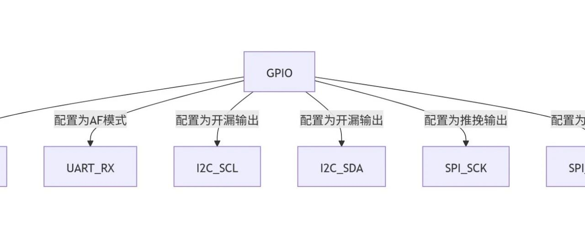

自己写一个简单的freertos（外部驱动部分）
一、uart驱动设计
寄存器处理
uart初始化
底层api设置
二、uart用户api
字符串输出（puts）
十六进制输出（puthex）
组合式调试输出（put_s_hex）
三、总结
typedef unsigned int uint32_t;typedef struct{volatile uint32_t SR; /*!< USART Status register, Address offset: 0x00 */volatile uint32_t DR; /*!< USART Data register, Address offset: 0x04 */volatile uint32_t BRR; /*!< USART Baud rate register, Address offset: 0x08 */volatile uint32_t CR1; /*!< USART Control register 1, Address offset: 0x0C */volatile uint32_t CR2; /*!< USART Control register 2, Address offset: 0x10 */volatile uint32_t CR3; /*!< USART Control register 3, Address offset: 0x14 */volatile uint32_t GTPR; /*!< USART Guard time and prescaler register, Address offset: 0x18 */} USART_TypeDef;void uart_init(void){USART_TypeDef *usart1 = (USART_TypeDef *)0x40013800;volatile unsigned int *pReg;/* 使能GPIOA/USART1模块 *//* RCC_APB2ENR */pReg = (volatile unsigned int *)(0x40021000 + 0x18);*pReg |= (1<<2) | (1<<14);/* 配置引脚功能: PA9(USART1_TX), PA10(USART1_RX)* GPIOA_CRH = 0x40010800 + 0x04*/pReg = (volatile unsigned int *)(0x40010800 + 0x04);/* PA9(USART1_TX) */*pReg &= ~((3<<4) | (3<<6));*pReg |= (1<<4) | (2<<6); /* Output mode, max speed 10 MHz; Alternate function output Push-pull *//* PA10(USART1_RX) */*pReg &= ~((3<<8) | (3<<10));*pReg |= (0<<8) | (1<<10); /* Input mode (reset state); Floating input (reset state) *//* 设置波特率* 115200 = 8000000/16/USARTDIV* USARTDIV = 4.34* DIV_Mantissa = 4* DIV_Fraction / 16 = 0.34* DIV_Fraction = 16*0.34 = 5* 真实波特率:* DIV_Fraction / 16 = 5/16=0.3125* USARTDIV = DIV_Mantissa + DIV_Fraction / 16 = 4.3125* baudrate = 8000000/16/4.3125 = 115942*/usart1->BRR = (DIV_Mantissa<<4) | (DIV_Fraction);/* 设置数据格式: 8n1 */usart1->CR1 = (1<<13) | (0<<12) | (0<<10) | (1<<3) | (1<<2);usart1->CR2 &= ~(3<<12);/* 使能USART1 */}int getchar(void){USART_TypeDef *usart1 = (USART_TypeDef *)0x40013800;while ((usart1->SR & (1<<5)) == 0);return usart1->DR;}int putchar(char c){USART_TypeDef *usart1 = (USART_TypeDef *)0x40013800;while ((usart1->SR & (1<<7)) == 0);usart1->DR = c;return c;
typedef struct{volatile uint32_t SR; /*!< USART Status register, Address offset: 0x00 */volatile uint32_t DR; /*!< USART Data register, Address offset: 0x04 */volatile uint32_t BRR; /*!< USART Baud rate register, Address offset: 0x08 */volatile uint32_t CR1; /*!< USART Control register 1, Address offset: 0x0C */volatile uint32_t CR2; /*!< USART Control register 2, Address offset: 0x10 */volatile uint32_t CR3; /*!< USART Control register 3, Address offset: 0x14 */volatile uint32_t GTPR; /*!< USART Guard time and prescaler register, Address offset: 0x18 */} USART_TypeDef;
结构体成员解析
成员变量 | 寄存器全称 | 地址偏移 | 主要功能描述 |
|---|---|---|---|
| Status Register | 0x00 | 状态寄存器，包含传输/接收状态标志和错误标志 |
| Data Register | 0x04 | 数据寄存器，用于读取接收到的数据或写入要发送的数据 |
| Baud Rate Register | 0x08 | 波特率寄存器，设置USART通信的波特率（波特率 = f_PCLK / (16 * DIV)) |
| Control Register 1 | 0x0C | 控制寄存器1，配置USART基本工作模式和使能控制 |
| Control Register 2 | 0x10 | 控制寄存器2，配置时钟、停止位等高级功能 |
| Control Register 3 | 0x14 | 控制寄存器3，配置DMA、中断、硬件流控等扩展功能 |
| Guard Time and Prescaler Register | 0x18 | 保护时间和预分频寄存器，主要用于智能卡模式和LIN模式 |
void uart_init(void){USART_TypeDef *usart1 = (USART_TypeDef *)0x40013800;volatile unsigned int *pReg;/* 使能GPIOA/USART1模块 *//* RCC_APB2ENR */pReg = (volatile unsigned int *)(0x40021000 + 0x18);*pReg |= (1<<2) | (1<<14);/* 配置引脚功能: PA9(USART1_TX), PA10(USART1_RX)* GPIOA_CRH = 0x40010800 + 0x04*/pReg = (volatile unsigned int *)(0x40010800 + 0x04);/* PA9(USART1_TX) */*pReg &= ~((3<<4) | (3<<6));*pReg |= (1<<4) | (2<<6); /* Output mode, max speed 10 MHz; Alternate function output Push-pull *//* PA10(USART1_RX) */*pReg &= ~((3<<8) | (3<<10));*pReg |= (0<<8) | (1<<10); /* Input mode (reset state); Floating input (reset state) *//* 设置波特率* 115200 = 8000000/16/USARTDIV* USARTDIV = 4.34* DIV_Mantissa = 4* DIV_Fraction / 16 = 0.34* DIV_Fraction = 16*0.34 = 5* 真实波特率:* DIV_Fraction / 16 = 5/16=0.3125* USARTDIV = DIV_Mantissa + DIV_Fraction / 16 = 4.3125* baudrate = 8000000/16/4.3125 = 115942*/usart1->BRR = (DIV_Mantissa<<4) | (DIV_Fraction);/* 设置数据格式: 8n1 */usart1->CR1 = (1<<13) | (0<<12) | (0<<10) | (1<<3) | (1<<2);usart1->CR2 &= ~(3<<12);/* 使能USART1 */}
这段代码实现了STM32微控制器上uart外设的初始化配置，下面我将逐部分详细解释其工作原理和实现细节。
首先，我们创建了一个USART_TypeDef结构体指针并强制它指向0x40013800也就是uart1的基地址，这样我们就可以通过操作这个结构体以操作uart1的寄存器。
USART_TypeDef *usart1 = (USART_TypeDef *)0x40013800;然后，我们需要配置时钟pReg = (volatile unsigned int*)(0x40021000+ 0x18);*pReg |= (1<<2) | (1<<14);
0x40021000是RCC(复位和时钟控制)模块的基地址+0x18对应RCC_APB2ENR寄存器(APB2外设时钟使能寄存器)设置第2位(
IOPAEN)：使能gpio端口时钟设置第14位(
USART1EN)：使能uart时钟
pReg = (volatile unsigned int *)(0x40010800 + 0x04);/* PA9(USART1_TX) */*pReg &= ~((3<<4) | (3<<6));*pReg |= (1<<4) | (2<<6); /* Output mode, max speed 10 MHz; Alternate function output Push-pull *//* PA10(USART1_RX) */*pReg &= ~((3<<8) | (3<<10));*pReg |= (0<<8) | (1<<10); /* Input mode (reset state); Floating input (reset state) */
pReg = (volatile unsigned int*)(0x40010800+ 0x04);/* PA9(USART1_TX) */*pReg &= ~((3<<4) | (3<<6));*pReg |= (1<<4) | (2<<6); /* Output mode, max speed 10 MHz; Alternate function output Push-pull */
先清除原有配置，再设置新配置
引脚模式：复用功能输出
输出类型：推挽输出
输出速度：10MHz
配置RX引脚
/* PA10(USART1_RX) */*pReg &= ~((3<<8) | (3<<10));*pReg |= (0<<8) | (1<<10); /* Input mode (reset state); Floating input (reset state) */
先清除原有配置，再设置新配置
引脚模式：输入模式
输入配置：浮空输入(无上拉或下拉电阻)
最后，配置uart的具体参数
usart1->BRR = (DIV_Mantissa<<4) | (DIV_Fraction);
如果目标波特率 = 115200 bp。
USARTDIV=8000000/(16×115200)≈4.342.将4.34分解为整数和小数部分：
DIV_Mantissa = 4（整数部分）DIV_Fraction = 0.34 × 16 ≈ 5（小数部分转换为4位二进制值）
(DIV_Mantissa << 4)：将整数部分左移4位，写入高12位。
DIV_Fraction：直接写入低4位。
usart1->CR1 = (1<<13) | (0<<12) | (0<<10) | (1<<3) | (1<<2);usart1->CR2 &= ~(3<<12);
对于CR1：
功能分解
位偏移 | 设置值 | 对应位字段 | 功能说明 |
|---|---|---|---|
13 |
| UE | USART模块使能（1=启用，0=禁用） |
12 |
| M | 数据长度（0=8位数据，1=9位数据） |
10 |
| PCE | 奇偶校验控制（0=禁用校验，1=启用校验） |
3 |
| TE | 发送器使能（1=启用发送功能，TX引脚生效） |
2 |
| RE | 接收器使能（1=启用接收功能，RX引脚生效） |
配置效果
工作模式：全双工通信（同时启用发送和接收）
数据格式：8位数据 + 无校验位（
8n）模块状态：USART外设已激活
功能分解
操作 | 作用 |
|---|---|
| 生成二进制 |
| 得到掩码 |
| 清零CR2寄存器的bit12-13（ |
配置效果
停止位：1位（
8n1格式）其他字段：保持默认值（如时钟极性、LIN模式等未修改）


接口 | UART | I2C | SPI |
|---|---|---|---|
通信类型 | 异步 | 同步 | 同步 |
信号线 | TX/RX | SCL/SDA | SCK/MOSI/MISO/CS |
时钟 | 无专用时钟线 | SCL（共享时钟） | SCK（专用时钟） |
速度 | 低速（通常<3Mbps） | 中速（≤3.4Mbps） | 高速（可达50Mbps） |
拓扑结构 | 点对点 | 多设备总线 | 主从式 |
int getchar(void){USART_TypeDef *usart1 = (USART_TypeDef *)0x40013800;while ((usart1->SR & (1<<5)) == 0);return usart1->DR;}
0x40013800，检测状态寄存器(SR)的RXNE位(bit5)，1表示接收数据寄存器非空。当USART接收到一个字节时：
硬件自动将数据存入
DR寄存器同时置位
SR寄存器的RXNE位(bit5)
DR后：RXNE位自动清零可准备接收下一个字节
int putchar(char c){USART_TypeDef *usart1 = (USART_TypeDef *)0x40013800;while ((usart1->SR & (1<<7)) == 0);usart1->DR = c;return c;}
检测状态寄存器(SR)的TXE位(bit7)，为1表示发送数据寄存器空，否则阻塞等待，直到发送缓冲区可用。不然，将数据写入数据寄存器(DR)，触发发送。
对应硬件基础:
当USART发送缓冲区空时：
硬件置位
SR寄存器的TXE位(bit7)
写入DR后：
硬件自动清零
TXE位开始串行发送数据位（起始位+数据位+停止位）
getchar()和putchar()基础收发功能，从而实现了一个简单而完整的uart。unsigned char（单字节，8位数据）作为输出单位，这显然·难以为用户所用。接下来，我们要利用并拓展这些系统api来完成更多的需求，使得用户能够使用它们。int puts(const char *s){while (*s){putchar(*s);s++;}return 0;}
功能：
输出一个以空字符结尾的字符串。
实现：
使用
while循环遍历字符串，直到遇到空字符（'\0'）。每次循环中，调用
putchar输出当前字符*s，然后将指针s移动到下一个字符。循环结束后返回
0（通常表示成功）。注意：
这个实现与标准库的
puts不同，标准库的puts会自动在字符串末尾添加换行符，而这个函数不会。返回值固定为
0，无法反映实际输出是否成功。
puthex十六进制形式输出
void puthex(unsigned int val){/* 0x76543210 */int i, j;puts("0x");for (i = 7; i >= 0; i--){j = (val >> (i*4)) & 0xf;if ((j >= 0) && (j <= 9))putchar('0' + j);elseputchar('A' + j - 0xA);}}
功能：将一个 32 位无符号整数
val以十六进制形式输出（格式为0xXXXXXXXX）。实现：
i从 7 递减到 0，对应 32 位整数的 8 个十六进制数字（每个数字 4位）。j = (val >> (i*4)) & 0xf：通过右移和掩码提取当前 4 位的值。如果
j是 0-9，输出'0'到'9'；如果是 10-15，输出'A'到'F'。首先输出前缀 "0x''。使用 for循环从高位到低位（从左到右）处理 val的每个 4 位十六进制数字：
注意：
固定输出 8 位十六进制数字，即使高位是 0 也会显示（例如
0x0000000A）。字母采用大写形式（
A-F）。
put_s_hex结合字符串和十六进制数值输出
void put_s_hex(const char *s, unsigned int val){puts(s);puthex(val);puts("\r\n");}
功能：结合字符串和十六进制数值输出，格式为
<字符串><十六进制值>\r\n。实现：
调用
puts(s)输出字符串s。调用
puthex(val)输出val的十六进制形式。调用
puts("\r\n")输出换行符（Windows 风格的\r\n）。示例：
若
s = "Value: "，val = 255，则输出Value: 0x000000FF\r\n。
这几个程序提供了一些简单的调试或日志输出功能，可以方便地输出字符串和十六进制数值。
三、总结
本文详细介绍了如何在自研freertos中实现uart串口通信功能，从硬件寄存器操作到用户友好的 api 设计，构建了一个完整的串口通信解决方案。
主要实现内容包括：
硬件驱动层：
通过内存映射方式访问 USART 寄存器
完整的初始化流程（时钟使能、gpio 配置、波特率设置）
阻塞式的基础收发函数实现
用户 API 层：
实现了字符串输出功能（puts）
添加了十六进制格式化输出（puthex）
提供了组合式调试输出（put_s_hex）
通过本文的实现，我们的 freertos 已经具备了基本的调试输出能力，为后续的任务调度观察和系统调试提供了重要工具。这个 uart 驱动框架也可以作为其他外设驱动的参考实现，展示了硬件抽象层和用户接口层的典型设计方法。